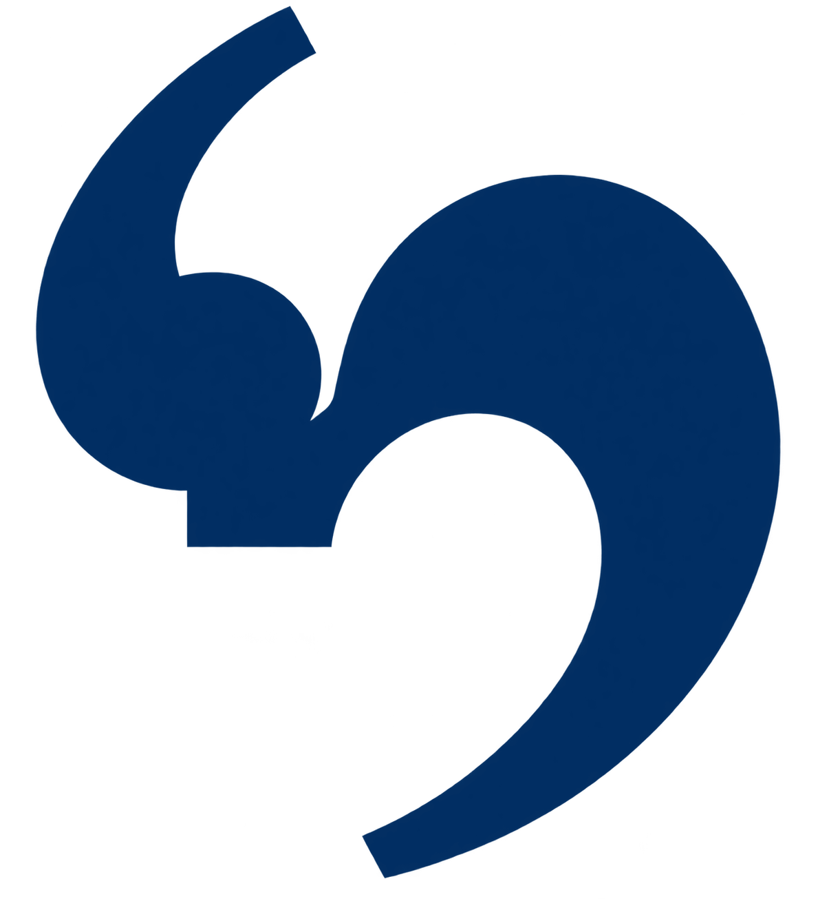
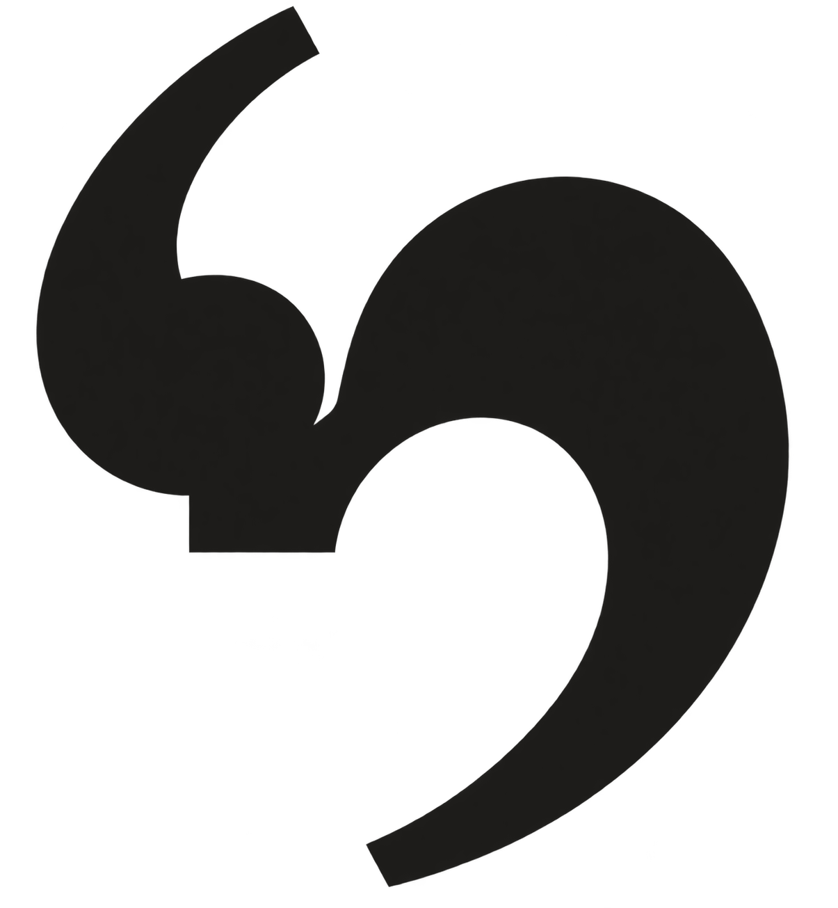
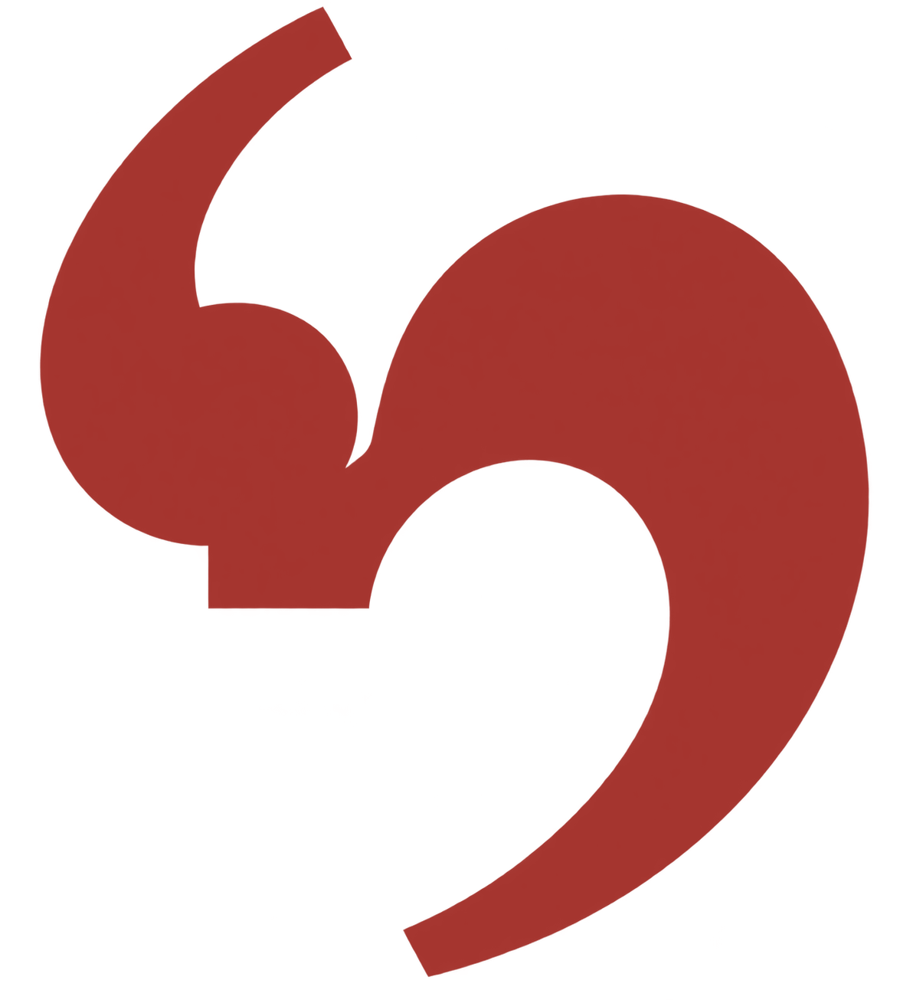

Brand Identity & Graphic Charter — v2.0
StoryBridge Content & Media
Journalistic values applied to multilingual content. Editorial, translation and media — Tunis, Tunisia. Arabic · English · French. This board is the single source of truth for the website UI build.

StoryBridge
Content & Media
storybridge.tn · issued 08.2026
Positioning
A boutique editorial house, not a digital-marketing studio.
Personality
Editorial
Trustworthy
Warm
Senior
Craftsman-like
Design principles
Type before ornament. Generous white space. One accent, used sparingly. Every layout must survive mirroring.
Voice
Plain, precise, bylined. We say “we edit”, never “we leverage”. Equal register in all three languages.
01
Logo system
Master artwork supplied by the client; the flat two-comma reduction is derived from it for one-ink, monochrome and small-size use.
StoryBridge
Content & Media
Primary lockup
On Content Cream. The default in every medium.

StoryBridge
Content & Media
Monochrome navy
100% Deep Narrative Navy, one ink. The default single-colour lockup: stamps, embossing, engraving, newspaper listings.
StoryBridge
Content & Media
Monochrome bronze
100% Bronze Byline. Foil, letterpress, hot-stamp and single-colour print on uncoated stock.

StoryBridge
Content & Media
Monochrome black
100% black for contracts, invoices, scans, faxes and any document that must survive photocopying.
Icon-only mark
Master artwork (left) for anything 40px and up; the two-comma reduction for one-ink, monochrome and small sizes. Never set the mark alone on first contact with a new audience — pair it with the wordmark at least once.
Clear space
x
x
StoryBridge
Content & Media
x = 50% of mark height.
No type, rule, image edge or fold may enter the x-margin on any side. On the web this is the header's minimum padding.
No type, rule, image edge or fold may enter the x-margin on any side. On the web this is the header's minimum padding.
Minimum sizes
StoryBridge
Content & Media
full lockup · 160px / 36mm
StoryBridge
reduced · 112px / 24mm
mark · 24px / 6mm
Below 112px the tagline is dropped — it becomes illegible before the wordmark does. Below 24px use the monochrome mark inside a cream circle with a navy keyline.
StoryBridge
DO
Hold the horizontal lockup and its built-in proportions.
StoryBridge
DON'T
Never stretch, skew, rotate or condense the lockup.

StoryBridge
DON'T
Never recolour outside navy, bronze, cream. Signal colours are for UI states only.
StoryBridge
DON'T
Never place on a busy field or patterned ground. Set a solid panel first.
02
Colour system
CMYK given for SWOP coated stock; always proof against a printed sheet before a run.
Signal colours · UI only
#2F6B4F · success
#C08A2E · warning
#A5342E · error
Desaturated to sit beside bronze. Never in marketing layouts or the logo.
Tint & shade ramps
Navy
Bronze
Usage ratio
Accessible pairings · WCAG 2.2
Foreground on background
Ratio
Level
Use for
Navy on Cream
12.8:1
AAA
Headlines, body, links
Black on Cream
17.9:1
AAA
Long-form article body
Cream on Deep Navy
16.7:1
AAA
Dark mode, footers
Navy on Narrative Light
10.6:1
AAA
Filled sections, tables
Bronze on Deep Navy
5.1:1
AA
Dark-mode accents, tagline
Bronze Deep on Cream
5.1:1
AA
Bronze text at body size
Bronze #B57D49 on Cream
3.3:1
AA large
24px+ only · rules · icons
Bronze on Narrative Light
2.7:1
Fail
Never. Use Bronze Deep instead.
03
Typography — Latin & Arabic
Four faces, two scripts, one voice. All available as web fonts and desktop licences.
Latin display · headlines & wordmark
400 · 600 · 700 · italic
Source Serif 4
ABCDEFGHIJKLMNOPQRSTUVWXYZ
abcdefghijklmnopqrstuvwxyz
0123456789 & “ ” « » — ¶ §
abcdefghijklmnopqrstuvwxyz
0123456789 & “ ” « » — ¶ §
“Un métier, pas une prestation.”
Chosen for its newsprint lineage and its full Latin-Extended coverage — French accents and Maghrebi transliteration set without substitution. Optical sizing on; never track below −0.02em.
Latin text · body, UI, captions
400 · 500 · 600
IBM Plex Sans
ABCDEFGHIJKLMNOPQRSTUVWXYZ
abcdefghijklmnopqrstuvwxyz
0123456789 & @ % € — → ✓
abcdefghijklmnopqrstuvwxyz
0123456789 & @ % € — → ✓
Interfaces, forms and fine print.
Grotesque with a subtle mechanical warmth that agrees with the serif. Its Arabic sibling shares metrics and weight names, which is why the two scripts can share one type scale.
Arabic display · headlines
400 · 700
نوتو نسخ عربي
أ ب ت ث ج ح خ د ذ ر ز س ش ص ض ط ظ ع غ ف ق ك ل م ن ه و ي
٠١٢٣٤٥٦٧٨٩ ، ؛ ؟ «»
٠١٢٣٤٥٦٧٨٩ ، ؛ ؟ «»
قيم الصحافة في خدمة المحتوى
A naskh with calligraphic contrast — the Arabic counterpart of a text serif, so headlines carry the same editorial authority as the Latin. Use for H1–H4 and pull quotes.
Arabic text · body & UI
400 · 500 · 600
آي بي إم بلكس
أ ب ت ث ج ح خ د ذ ر ز س ش ص ض ط ظ ع غ ف ق ك ل م ن ه و ي
٠١٢٣٤٥٦٧٨٩ — 0123456789
٠١٢٣٤٥٦٧٨٩ — 0123456789
الواجهات والنماذج والتفاصيل الدقيقة.
Metric-compatible with IBM Plex Sans, so a mixed-script page needs no per-language overrides beyond size and leading.
Type scale · 1.25 major third, 16px root
Token
Latin specimen
Spec
Arabic override
h1
Bylines matter
Serif 600 · 60/63 · −0.02em
64/96 · 0em
h2
Bylines matter
Serif 600 · 48/53 · −0.015em
51/77 · 0em
h3
Bylines matter
Serif 600 · 36/41 · −0.01em
38/61 · 0em
h4
Bylines matter
Serif 600 · 28/35 · 0em
30/48 · 0em
h5
Bylines matter
Sans 600 · 22/30 · 0em
23/37 · 0em
h6
Bylines matter
Sans 600 · 18/25 · 0.01em
19/31 · 0em
overline
Section label
Sans 600 · 12/14 · 0.18em · caps
no caps, no tracking
body-lg
We edit, translate and place stories.
Sans 400 · 18/30
19/34
body
We edit, translate and place stories.
Sans 400 · 16/26
17/31
body-sm
We edit, translate and place stories.
Sans 400 · 14/22
15/27
button
Request a quote
Sans 600 · 15/15 · 0.02em
16/24 · 0em
caption
Photo: StoryBridge archive, Tunis
Sans 400 · 12/17
13/21
Arabic overrides are mechanical: size × 1.06, line-height × 1.22, tracking reset to 0. Measure caps at 68–78 characters in Latin, 60–68 in Arabic.
RTL layout rules
Mirror the layout, not the mark. Set dir="rtl" on <html>; the comma glyph is never flipped — it is a mark, not an arrow.
Lockup flips side, keeps order. The mark sits to the right of the Arabic wordmark, same gap (0.28× mark height), same baseline alignment.
Logical properties only. margin-inline-start, padding-inline, border-inline-end. No left/right in the stylesheet.
Mirror directional icons (arrows, chevrons, progress). Never mirror logos, clocks, media controls or Latin-bearing badges.
No synthetic styling. Arabic takes no italics, no uppercase, no letter-spacing, no small caps — emphasise with weight 600 or bronze colour.
Numerals. Eastern Arabic (٠١٢) in editorial body; Western (012) in tables, prices, phone numbers and UI. Never mix within one sentence.
Punctuation. Arabic comma ، and question mark ؟. Guillemets « » across all three languages — they are our quotation mark.
Arabic lockup
ستوري بريدج
المحتوى والإعلام
In bilingual contexts the Latin lockup leads and the Arabic wordmark sits beneath it, separated by a hairline bronze rule — never side by side at equal weight.
04
Iconography & pattern language
Our icons are punctuation. The trade is written down, so the marks of writing are the marks of the brand.
Service pillars · icon set
¶
Content & Editorial
Contenu & Édition
المحتوى والتحرير
المحتوى والتحرير
A/ع
Translation & Localization
Traduction & Localisation
الترجمة والتوطين
الترجمة والتوطين
§
Editing & Writing
Rédaction & Relecture
التدقيق والكتابة
التدقيق والكتابة
«»
Media & Press
Médias & Presse
الإعلام والصحافة
الإعلام والصحافة
¶
¶
¶
¶
Rest · hover · active · disabled. Spec: 24px glyph on a 76px ring (or 20/52 compact), 1.5px stroke, glyph set in the display serif at 0.46× ring height, optically centred — punctuation sits high, so nudge +2% down.
Pattern A · Flowing Narrative Weave
Overlapping arcs — one story handed to the next. Tile is 2:1 — 96 × 48px at full size, never below 48px tall. Max 45% opacity behind type; full strength only on covers, card backs and folder interiors. Size panels to a whole number of tiles so no arc row is cut.
Pattern B · Quotation Field
Opening and closing curly quotes set in Source Serif, alternating on an offset grid — the sentence never closes, it is handed on. Tile is square: 80 × 80px with a 56px glyph. Scale the tile, never the glyph’s proportion to it.
Pattern B · light & small tile
Small tile at 30% for section dividers, table headers and endpapers. Never below a 34px tile — the glyph loses its curl. Only one pattern per composition: A and B never share a surface.
Editorial imagery
reportage photo · 3:2 · b/w or warm-neutral grade
Documentary, available light, people at work. No stock handshakes, no gradient overlays. A 6% navy multiply layer unifies mixed sources.
05
UI design tokens
Hand these values straight to the website build. Hover the buttons below — the states are live.
Spacing · 4px base
sp-1
4
sp-2
8
sp-3
12
sp-4
16
sp-6
24
sp-8
32
sp-12
48
sp-16
64
sp-24
96
sp-32
128
Section rhythm: 96 desktop / 48 mobile. Card padding 32. Grid gutter 32, 12 columns, 1320 max content width.
Corner radius
0 · rules
2 · inputs
4 · buttons
8 · cards
16 · media
full · pills
Elevation
e0 · flat
1px #E6E0D8 border
1px #E6E0D8 border
e1 · resting card
0 1px 2px / 0 2px 8px
0 1px 2px / 0 2px 8px
e2 · hover / dropdown
0 2px 4px / 0 8px 24px
0 2px 4px / 0 8px 24px
e3 · modal / dialog
0 4px 8px / 0 24px 48px
0 4px 8px / 0 24px 48px
Shadows are navy-tinted, never neutral black. In dark mode swap to rgba(0,0,0,0.45) plus a 1px inset rgba(253,248,241,0.08) hairline.
Buttons · light mode
Request a quote
See our work
Read the journal →
Disabled
primary bg #002D62 → hover #001838 → active #001233
secondary border #B57D49 · text #8F6135 → hover bg #F8F1E8
height 48 · radius 4 · pad 14/26 · focus ring 2px #B57D49 + 2px offset
secondary border #B57D49 · text #8F6135 → hover bg #F8F1E8
height 48 · radius 4 · pad 14/26 · focus ring 2px #B57D49 + 2px offset
Buttons · dark mode
Request a quote
See our work
Read the journal →
Disabled
Bronze becomes the primary fill on navy — navy-on-navy has no affordance.
focus ring 2px #FDF8F1 + 2px offset
focus ring 2px #FDF8F1 + 2px offset
Forms & cards · light mode
Full name
Amina Trabelsi
Default · border #D8D1C7
Work email
amina@revue.tn
Focus · navy border + bronze ring
Deadline
32 / 08 / 2026
Enter a valid date · dd/mm/yyyy
Invoice reference
Issued after acceptance
Disabled · not editable
§
Editing & Writing
Substantive edits, fact-checks and rewrites — the desk work behind a publishable piece.
Learn more →
Forms & cards · dark mode
Full name
Amina Trabelsi
Default · surface #072448
Work email
amina@revue.tn
Focus · bronze border + ring
Deadline
32 / 08 / 2026
Enter a valid date · dd/mm/yyyy
Invoice reference
Issued after acceptance
Disabled · not editable
§
Editing & Writing
Substantive edits, fact-checks and rewrites — the desk work behind a publishable piece.
Learn more →
Featured
Trilingual newsroom style guide
One cream card per dark section, maximum — it is the emphasis, not the texture.
06
Applications
Print stationery and the homepage, proved in both reading directions.
Business card · 85 × 55 mm
StoryBridge
Content & Media
Amine Ben Salah
Co-founder · Editorial Director
شريك مؤسس · مدير التحرير
شريك مؤسس · مدير التحرير
+216 71 234 567
amine@storybridge.tn
storybridge.tn
Colorplan Natural 350gsm, bronze foil on the monochrome mark. Contact block always ends flush with the trim-safe margin (5mm).
Letterhead · A4
StoryBridge
Content & Media
14, rue de Marseille
1000 Tunis, Tunisie
+216 71 234 567
storybridge.tn
1000 Tunis, Tunisie
+216 71 234 567
storybridge.tn
Tunis, 22 August 2026
Editorial services — proposal
StoryBridge SARL · RNE 1234567A
1 / 2
Type area inset 24mm; the bronze rule marks the start of the text block. Arabic letterhead mirrors the whole sheet — lockup right, contact block left.
Digital marks

app 88
avatar 56
favicon 32
16
Below 40px the master’s gradients and inner highlight turn to mud — switch to the flat two-comma reduction and ship a hand-tuned SVG per size, never a scaled one.
Email signature
Amine Ben Salah
Co-founder · Editorial Director
StoryBridge Content & Media
+216 71 234 567 · storybridge.tn
Homepage · LTR (EN / FR)
Homepage · RTL (العربية) — fully mirrored
Everything mirrors: logo to the right, nav to the left, cards fill right-to-left, the “all services” arrow reverses to ←. The URL string stays LTR. Arabic headline leading opens to 1.5 so ascenders and diacritics clear.
StoryBridge Content & Media · Brand Identity & Graphic Charter v2.0 · Colour values corrected and derived from the approved hex set · Tunis, August 2026
StoryBridge